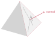
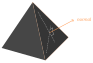

Basic shading#
Resulting code: step056
Resulting code: step056-vanilla
From the beginning of this 3D mesh section, we have been cheating by darkening the color of the tip of the pyramid in order to get some sense of the geometry. But in reality, the strongest visual clues we get about the geometry of the objects that surround us come from the lighting effects, and in particular the shading.
In this chapter we get an intuition about how to shade a scene, but do not follow a very physically based approach (this will come later on).
Theory#
Let’s be quick with the theory, because we’ve had enough in the previous chapter. Simply look at this picture:
It is always a good idea to observe natural images.#
The jar has a more or less uniform material. Yet, its different sides look different, the left-hand squared area is darker than the right-hand one.
Why so? Because they have different orientations. One is oriented towards the light, whereas the other one faces a different direction.
The direction of a face is expressed as a vector that is perpendicular to the face. This is called a normal vector, and it always has length 1 because all we care about is its direction (it is called a normalized vector, or a unit vector).
A normal vector is perpendicular to its face and has a length of 1.
Note
There are two possible vectors that are perpendicular to the face and have a unit length: one and its opposite. By convention, we point the normal towards the outside of the object, but this might not be well defined for meshes that are not closed. Whenever you encounter weird shading artifacts, always check your normals!
Normal#
Data#
The normals can be mathematically computed (using the cross product of two sides of the triangle), but it is common to store them in the 3D file format, because sometimes we use intentionally fake normals to give the feeling that triangles are slightly curved.
We will add this normal information to our little file format and add a new vertex attribute:
# pyramid.txt
[points]
# We add normal vector (nx, ny, nz)
# x y z nx ny nz r g b
# The base
-0.5 -0.5 -0.3 0.0 -1.0 0.0 1.0 1.0 1.0
+0.5 -0.5 -0.3 0.0 -1.0 0.0 1.0 1.0 1.0
+0.5 +0.5 -0.3 0.0 -1.0 0.0 1.0 1.0 1.0
-0.5 +0.5 -0.3 0.0 -1.0 0.0 1.0 1.0 1.0
# Face sides have their own copy of the vertices
# because they have a different normal vector.
-0.5 -0.5 -0.3 0.0 -0.848 0.53 1.0 1.0 1.0
+0.5 -0.5 -0.3 0.0 -0.848 0.53 1.0 1.0 1.0
+0.0 +0.0 +0.5 0.0 -0.848 0.53 1.0 1.0 1.0
+0.5 -0.5 -0.3 0.848 0.0 0.53 1.0 1.0 1.0
+0.5 +0.5 -0.3 0.848 0.0 0.53 1.0 1.0 1.0
+0.0 +0.0 +0.5 0.848 0.0 0.53 1.0 1.0 1.0
+0.5 +0.5 -0.3 0.0 0.848 0.53 1.0 1.0 1.0
-0.5 +0.5 -0.3 0.0 0.848 0.53 1.0 1.0 1.0
+0.0 +0.0 +0.5 0.0 0.848 0.53 1.0 1.0 1.0
-0.5 +0.5 -0.3 -0.848 0.0 0.53 1.0 1.0 1.0
-0.5 -0.5 -0.3 -0.848 0.0 0.53 1.0 1.0 1.0
+0.0 +0.0 +0.5 -0.848 0.0 0.53 1.0 1.0 1.0
[indices]
# Base
0 1 2
0 2 3
# Sides
4 5 6
7 8 9
10 11 12
13 14 15
Caution
I had to duplicate some points, because although they have the same location, they have different normals depending on the face they belong to. Actually, vertices should be considered in general as face corners rather than 3D points.
Note
To better see the impact of our shading, I gave the same base color to the whole pyramid this time.
Loading#
We do not need to change our geometry loading procedure, only the number of float attributes per vertex:
bool success = loadGeometry(RESOURCE_DIR "/pyramid.txt", vertexData, indexData, 6);
// ^ This was a 3
The vertexData array now contains 3 attributes per vertex. In order to better manage our vertex attributes, we can create a structure that we will use similarly to the MyUniforms struct:
using glm::vec3;
/**
* A structure that describes the data layout in the vertex buffer
* We do not instantiate it but use it in `sizeof` and `offsetof`
*/
struct VertexAttributes {
vec3 position;
vec3 normal;
vec3 color;
};
This structure mirrors the VertexInput struct from the WGSL shader:
struct VertexInput {
@location(0) position: vec3<f32>,
@location(1) normal: vec3<f32>, // new attribute
@location(2) color: vec3<f32>,
};
The order of the fields does not need to be the same. The order of the fields in the C++ struct VertexAttributes is driven by the order in which the data is stored in the loaded file.
The order in VertexInput does not matter, and the @location must match the attribute definition:
std::vector<VertexAttribute> vertexAttribs(3);
// ^ This was a 2
// Position attribute
vertexAttribs[0].shaderLocation = 0;
vertexAttribs[0].format = VertexFormat::Float32x3;
vertexAttribs[0].offset = offsetof(VertexAttributes, position);
// Normal attribute
vertexAttribs[1].shaderLocation = 1;
vertexAttribs[1].format = VertexFormat::Float32x3;
vertexAttribs[1].offset = offsetof(VertexAttributes, normal);
// Color attribute
vertexAttribs[2].shaderLocation = 2;
vertexAttribs[2].format = VertexFormat::Float32x3;
vertexAttribs[2].offset = offsetof(VertexAttributes, color);
// [...]
vertexBufferLayout.arrayStride = sizeof(VertexAttributes);
// ^^^^^^^^^^^^^^^^^^^^^^^^ This was 6 * sizeof(float)
And do not forget to change the device limits:
requiredLimits.limits.maxVertexAttributes = 3;
// ^ This was a 2
Shading#
Light direction#
Now the normal data is loaded from the file, and accessible to the vertex shader. But shading occurs in the fragment shader, so we need to forward the normal attribute:
struct VertexOutput {
@builtin(position) position: vec4<f32>,
@location(0) color: vec3<f32>,
@location(1) normal: vec3<f32>, // <--- Add a normal output
};
// [...]
@vertex
fn vs_main(in: VertexInput) -> VertexOutput {
// [...]
// Forward the normal
out.normal = in.normal;
return out;
}
In order to check that everything is piped up correctly, you can try to just use the coordinates of the normal vector as the output color. Since these coordinates are in the range \((-1,1)\), I usually add * 0.5 + 0.5 to remap them in the range \((0,1)\), which the color output expects:
fn fs_main(in: VertexOutput) -> @location(0) vec4<f32> {
let color = in.normal * 0.5 + 0.5;
// [...]
}
These color are typical of the normal "palette".
Let’s now do some experiments with this normal:
fn fs_main(in: VertexOutput) -> @location(0) vec4<f32> {
let color = in.color * in.normal.x;
// [...]
}
Multiplying the color by the normal axes creates axis-aligned directional lights.#
To apply a lighting coming from an arbitrary direction, we again use a linear combination of the different axes:
fn fs_main(in: VertexOutput) -> @location(0) vec4<f32> {
let shading = 0.5 * in.normal.x - 0.9 * in.normal.y + 0.1 * in.normal.z;
let color = in.color * shading;
// [...]
}
Mixing multiple axes can create a directional light coming from any direction.#
The coefficient \((0.5, -0.9, 0.1)\) are in fact the light direction This combination is called a dot product:
fn fs_main(in: VertexOutput) -> @location(0) vec4<f32> {
let lightDirection = vec3<f32>(0.5, -0.9, 0.1);
let shading = dot(lightDirection, in.normal);
let color = in.color * shading;
// [...]
}
Note
The term “direction” suggests that this is a normalized vector (i.e., a vector whose length is \(1\). Here we actually encode the direction plus the intensity of the light, through the magnitude (i.e., length) of the vector.
Multiple lights#
Adding multiple light sources is as simple as summing the contribution of multiple directions. One important thing though:
let shading = max(0.0, dot(lightDirection, in.normal));
// ^^^^^^^^ This clamps negative values to 0.0
fn fs_main(in: VertexOutput) -> @location(0) vec4<f32> {
let lightDirection1 = vec3<f32>(0.5, -0.9, 0.1);
let lightDirection2 = vec3<f32>(0.2, 0.4, 0.3);
let shading1 = max(0.0, dot(lightDirection1, in.normal));
let shading2 = max(0.0, dot(lightDirection2, in.normal));
let shading = shading1 + shading2;
let color = in.color * shading;
// [...]
}
fn fs_main(in: VertexOutput) -> @location(0) vec4<f32> {
let lightColor1 = vec3<f32>(1.0, 0.9, 0.6);
let lightColor2 = vec3<f32>(0.6, 0.9, 1.0);
// [...]
let shading = shading1 * lightColor1 + shading2 * lightColor2;
let color = in.color * shading;
// [...]
}
Two colored lights.
Transform#
In the previous part, the light direction changes with the object’s orientation. To apply a fixed global lighting, we need to transform the normal wrt. the model transform, but not the view transform (hence the distinction).
// in Vertex shader
out.normal = (uMyUniforms.modelMatrix * vec4<f32>(in.normal, 0.0)).xyz;
// [...]
// in Fragment shader
let normal = normalize(in.normal);
// (and replace in.normal with normal in shading1/shading2)
Fixed light direction.
Conclusion#
We will see a much more accurate material model in the Lighting and material chapter.
Resulting code: step056
Resulting code: step056-vanilla